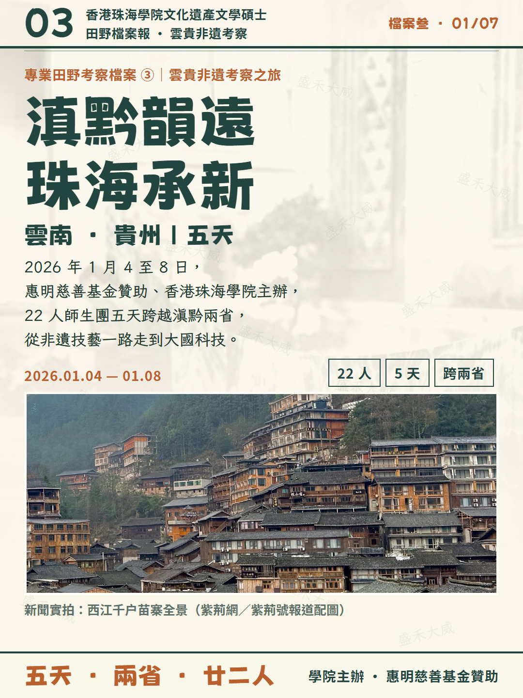
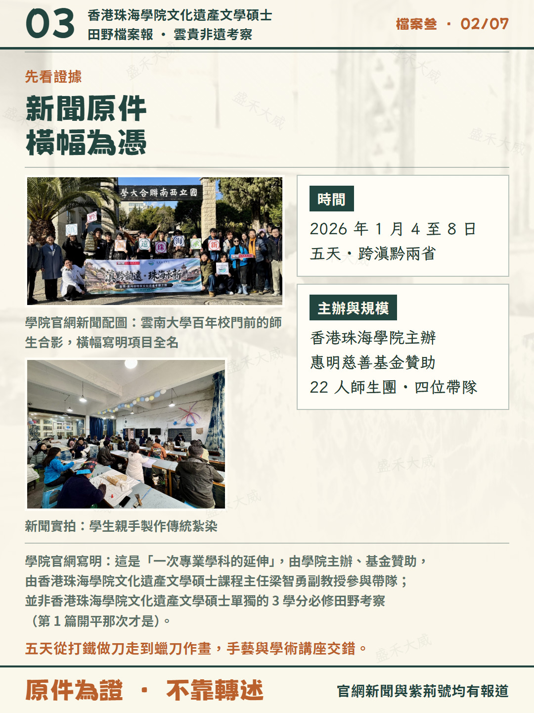
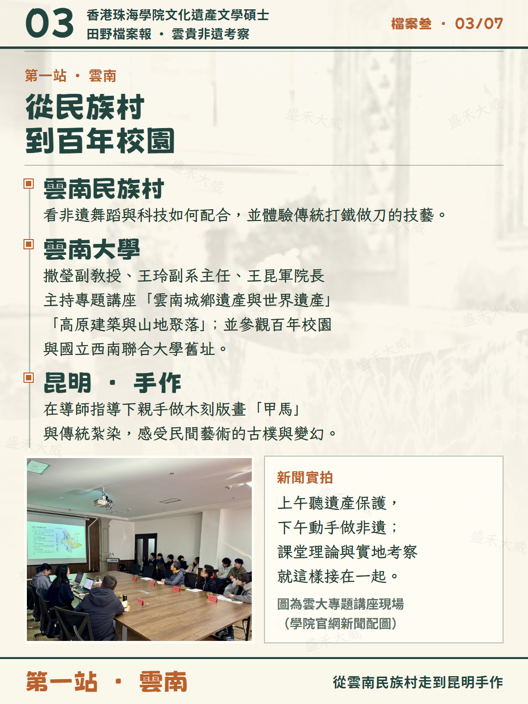
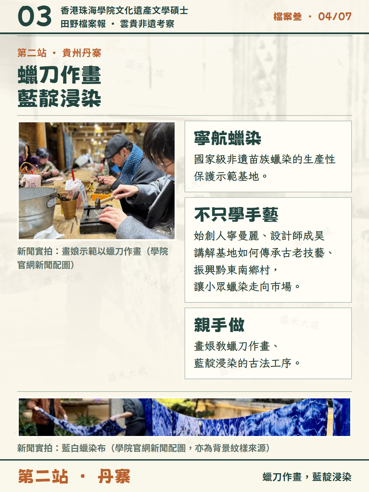
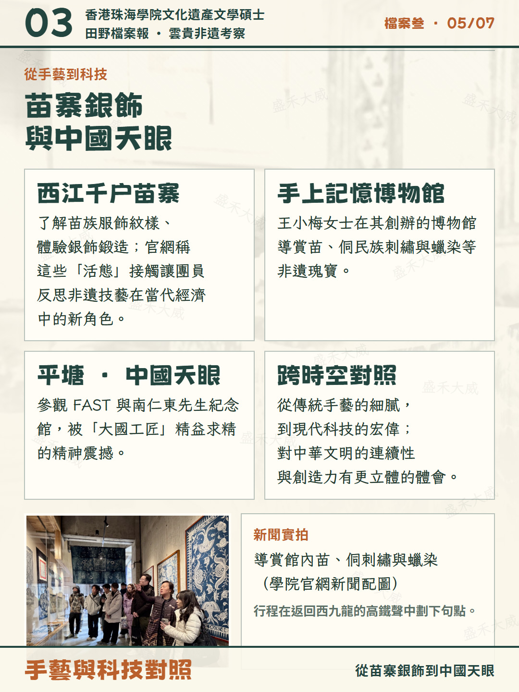
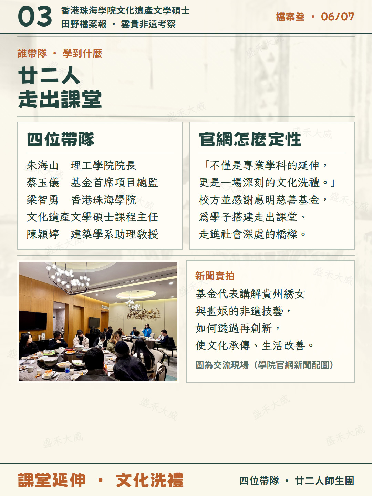
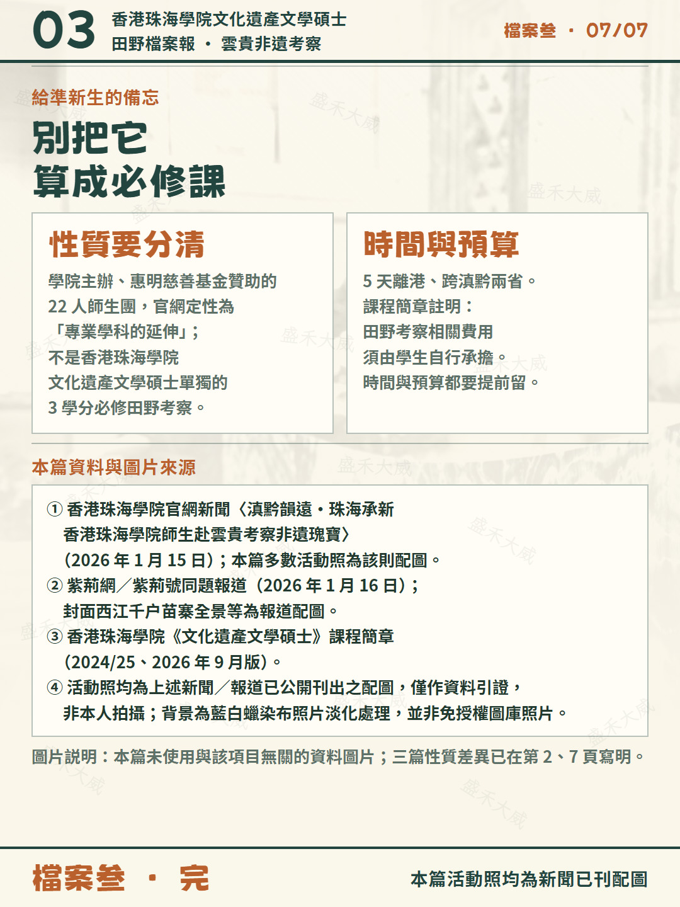

學院主辦、惠明慈善基金贊助的師生考察團







我明年 1 月入學香港珠海學院文化遺產文學碩士，把往屆田野考察從頭扒了一遍：第一篇開平，第二篇泉州廈門，這是第三篇雲貴。
先説性質，別搞混：開平那次是首屆的 3 學分必修田野考察；這趟「滇黔韻遠·珠海承新」是學院主辦、惠明慈善基金贊助的 22 人師生考察團，官網定性為「一次專業學科的延伸」，由香港珠海學院文化遺產文學碩士課程主任梁智勇副教授參與帶隊，並不是該課程單獨的必修田野考察。
時間 2026 年 1 月 4 至 8 日，五天跨滇黔兩省。帶隊還有朱海山、蔡玉儀、陳穎婷。
雲南這半程：先在雲南民族村看非遺舞蹈與科技怎麼配合、體驗傳統打鐵做刀；第二天到雲南大學，由撒瑩副教授、王玲副系主任、王昆軍院長主持「雲南城鄉遺產與世界遺產」「高原建築與山地聚落」兩場講座，再逛百年校園和國立西南聯合大學舊址；下午在昆明親手做木刻版畫「甲馬」和傳統紮染。
轉到貴州，最打動我的是丹寨「寧航蠟染」——國家級非遺苗族蠟染的生產性保護示範基地。始創人寧曼麗、設計師成昊不只講工藝，還講基地怎麼傳承古老技藝、振興黔東南鄉村，讓曾經小眾的蠟染走向市場。學生在畫娘指導下學蠟刀作畫、藍靛浸染。原來非遺保護和當地人的生計，可以是同一件事。
晚上在西江千户苗寨看服飾紋樣、體驗銀飾鍛造；在貴陽市「手上記憶博物館」，創辦人王小梅導賞苗、侗刺繡與蠟染。官網把這些叫「活態」接觸，説團員由此反思非遺技藝在當代經濟中的新角色。
最後一段完全跳出了手藝：去平塘看「中國天眼」FAST 和南仁東先生紀念館。從傳統手工藝的細膩，到現代科技的宏偉，官網寫這種跨時空對照讓人對中華文明的連續性與創造力有更立體的體會。行程在返回西九龍的高鐵聲中結束。
給準新生三條：
1. 性質分清，別把它算進 3 學分
2. 五天離港、跨兩省，時間和預算提前留
3. 課程簡章寫明田野考察費用須由學生自行承擔
資料來自學院官網新聞與紫荊網同題報道，出處在圖 7。這組現場照都是當年新聞已刊配圖，不是我拍的。三篇扒完。
说明：本页图卡为小红书发布版本，采用港式繁体；活动照片为新闻／报道已刊配图，仅作资料引证。文中凡提及该专业，均使用完整名称「香港珠海學院文化遺產文學碩士」。